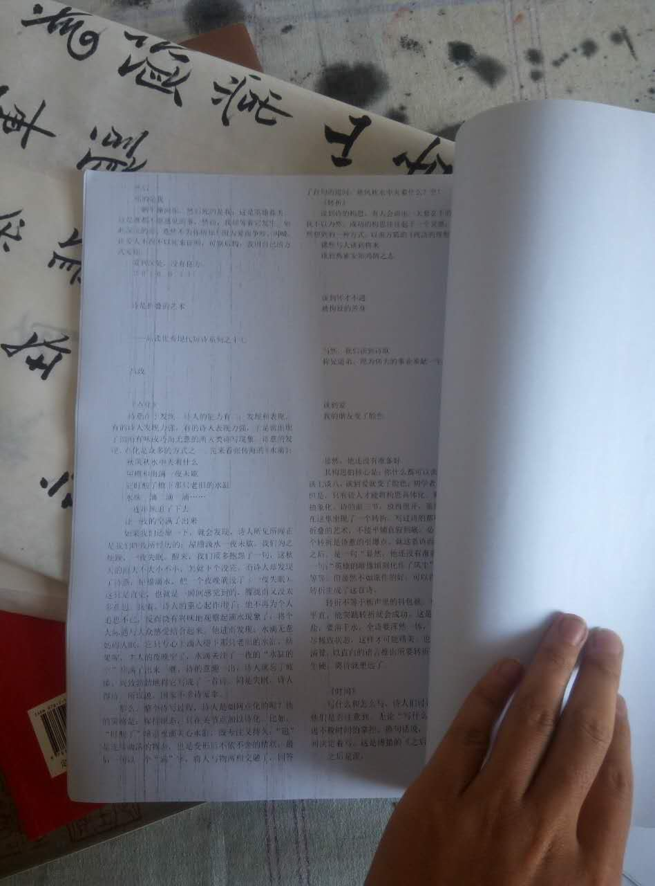
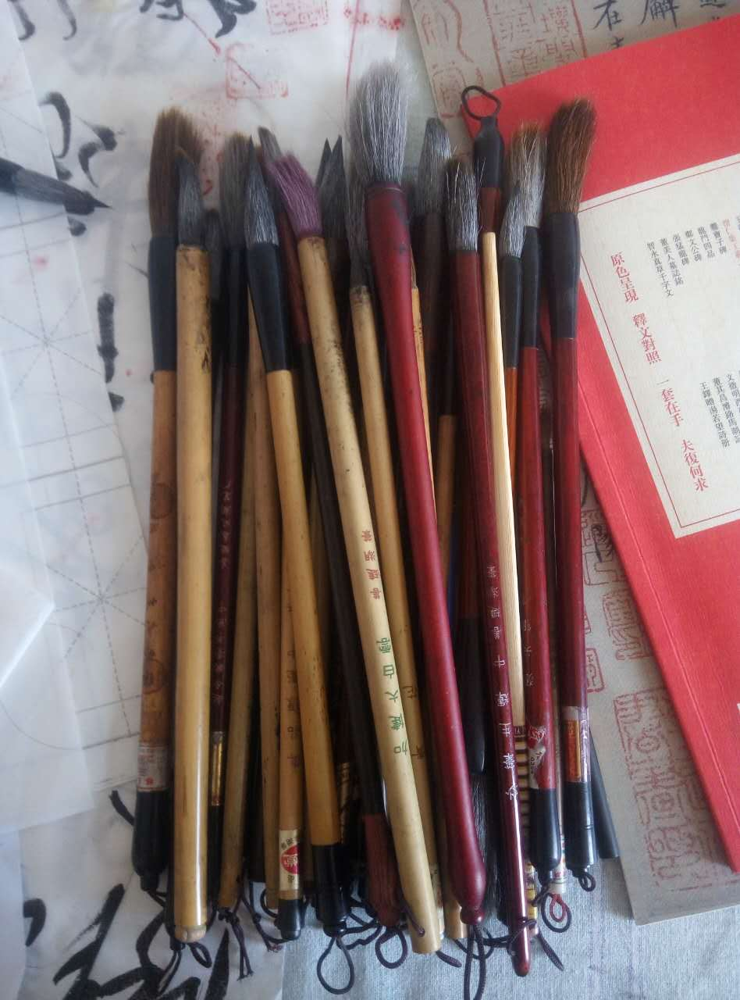
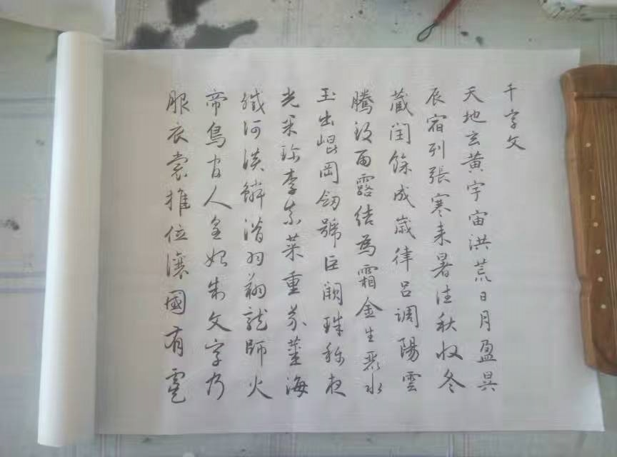
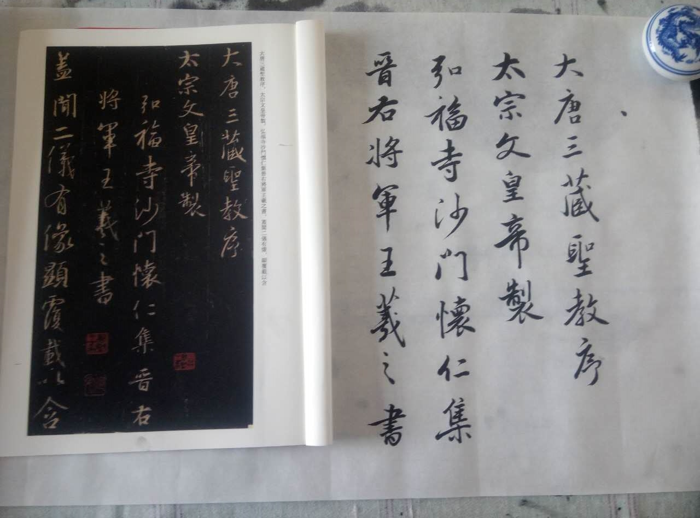
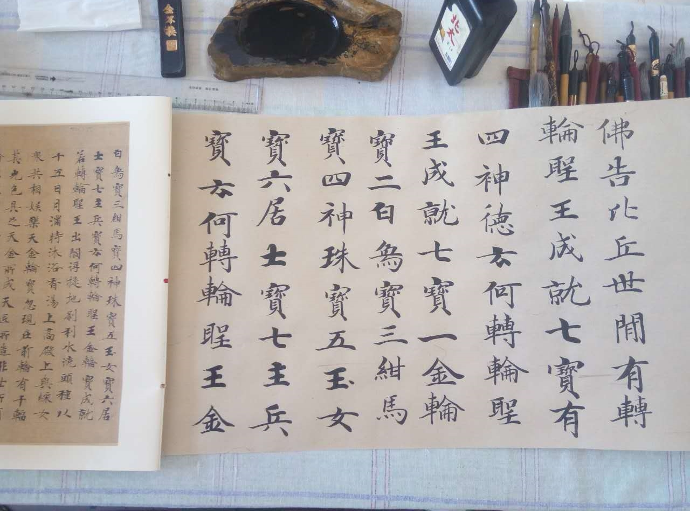
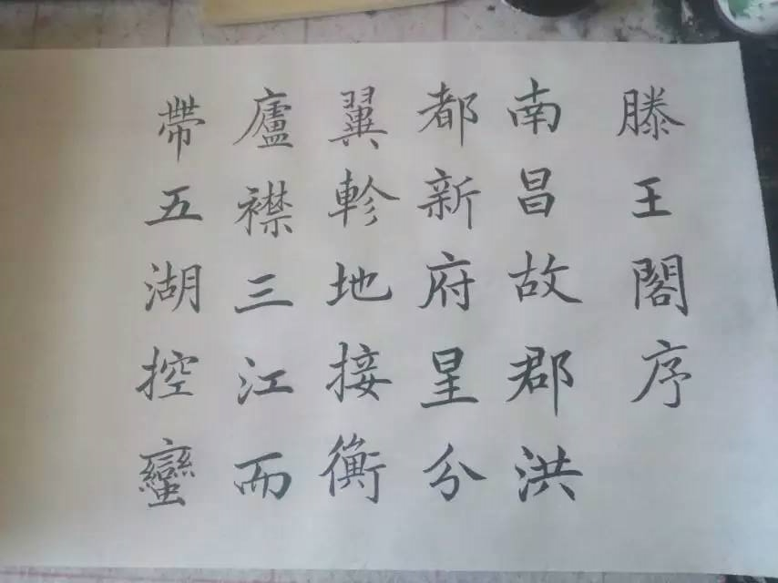
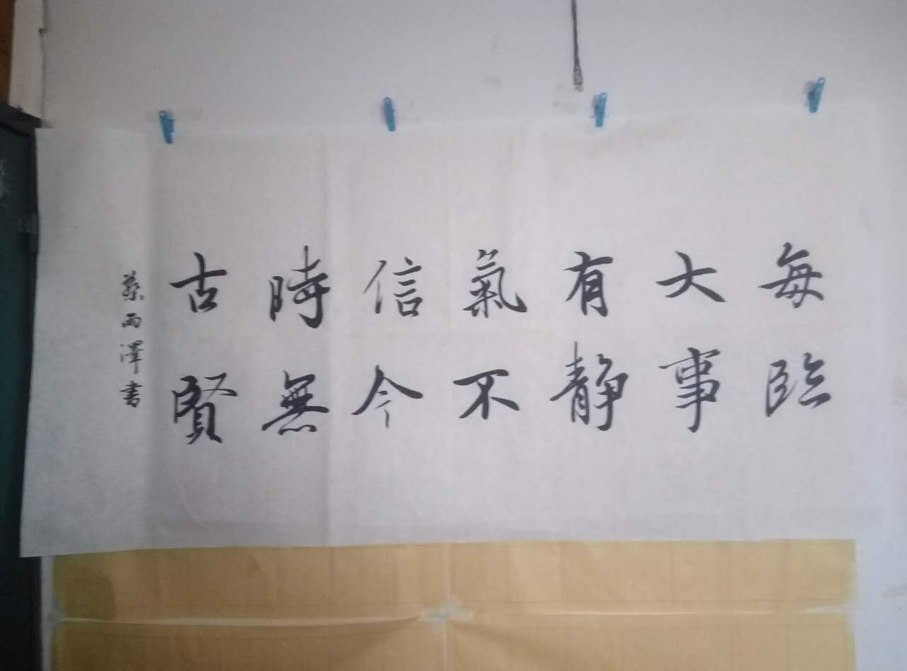
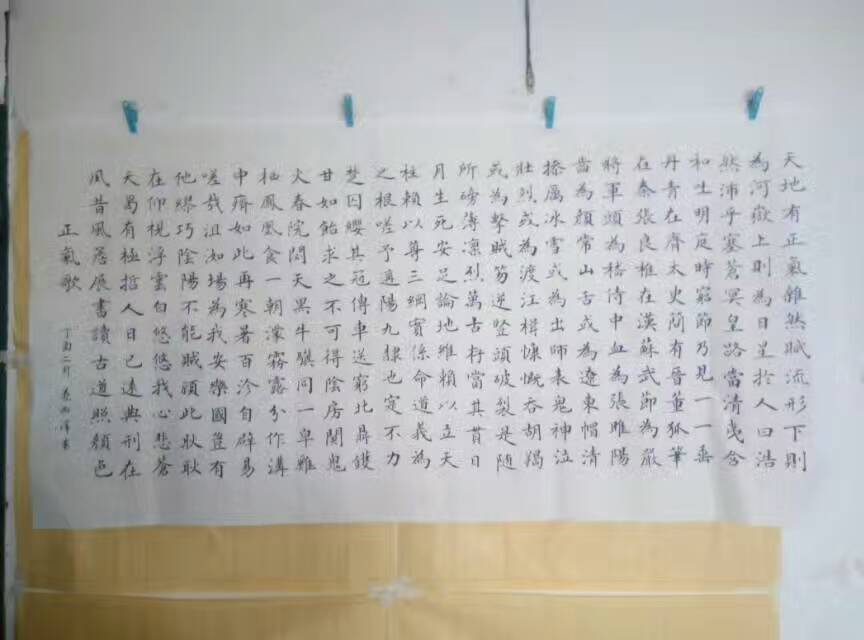
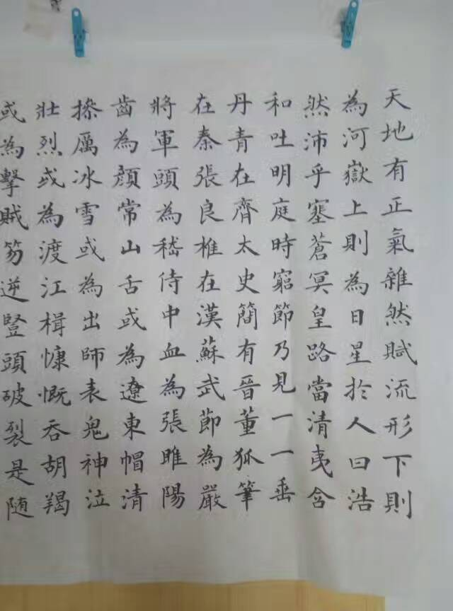
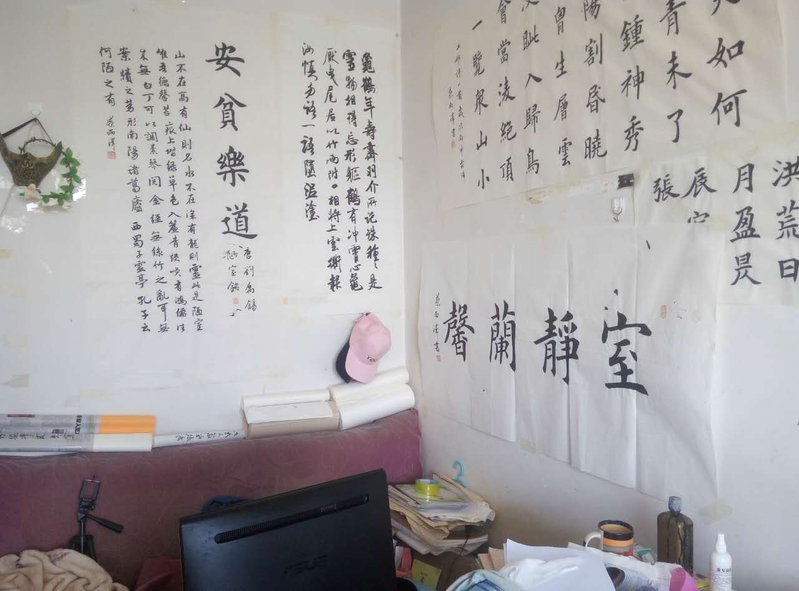

正文:
一直坚持做两件事情：读和写。
读：
别人每天坚持读英语，背单词，我不是，我在坚持读诗。
很多人也在坚持读诗，读唐诗宋词，我不是，我坚持读新诗。从网上摘录一些不错的新诗，辑录成册，每天读上两首。
这事从2008年开始，去年到今年读的少些，但一直在读。
这本大概有一千首诗左右。这种自己打印的我有好几本。
我知道，很多人是看不起新诗的。这些朋友往往还停留在《再别康桥》、《面朝大海》那个阶段，其实这些年，网络上的新诗发展非常迅捷，也涌现出了不少的高手，比如我比较喜欢的诗人，雷平阳、左岸……，他们的部分诗歌已经达到了传世的造诣。
有人会说，读诗本身就没用，而读新诗还不如读古诗有用，你为啥还要读新诗？
对的，没用！我读，但我从来没想过要写，也从未写过。我读诗并不是从中获取写作素材，也没有“诗意生活”这么高尚的品味。
世间太多的事情都是没用的，正因为这些没用的事情，才使得生活多姿多彩，不至于枯燥无味。
写：
然后就是练字，这事一直在坚持，而且准备再练半辈子。
今年写的部分作品：
千字文
临《圣教序》
临唐人抄经
家里太小，只能写一些比较窄的长卷，大纸没地方摆。
王羲之集字。

临赵孟頫《道德经》
正气歌
局部
虽然每天都很辛苦，但我还在住着十平米的小屋，并没有走向成功。